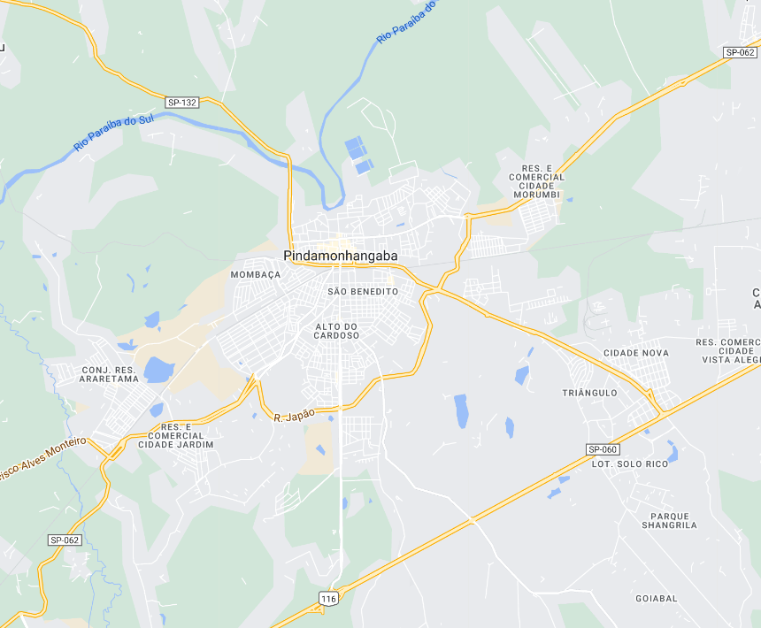
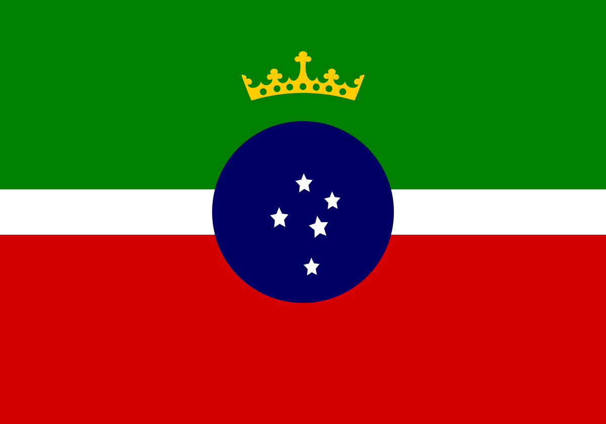

Pindamonhangaba - Geodex


Município de Pindamonhangaba
-
Populacão: 171.885 pessoas
-
Área: 731,355km²
-
Fundação: 10 de Julho de 1705
-
Distância da Capital: 147km
Pindamonhangaba, localizada no estado de São Paulo, é uma cidade com uma rica história e um ambiente cultural diversificado. Fundada em 10 de julho de 1705, a cidade teve origem na aldeia indígena de Pindamonhangaba, habitada pelos índios guarulhos e puris. Ao longo dos anos, Pindamonhangaba se desenvolveu e se tornou um importante polo econômico e cultural da região. A cidade preserva seu patrimônio histórico, com igrejas antigas, casarões coloniais e museus que contam a história local. Além disso, Pindamonhangaba possui uma natureza exuberante, com rios, cachoeiras e áreas verdes, proporcionando oportunidades para atividades ao ar livre e turismo ecológico. Com uma população acolhedora e uma localização estratégica próxima a importantes centros urbanos, Pindamonhangaba continua a crescer e se desenvolver, mantendo sua identidade histórica e cultural.